Setup
This guide will help you setup and configure KVM introspection.
Currently 2 setup methods are supported:
Vagrant: contained in a virtual machine (on both Linux and Windows)
bare-metal: directly on the host
Cloning the sources
The first is to clone the main KVM-VMI repository:
$ git clone https://github.com/KVM-VMI/kvm-vmi.git --recursive
If you have already cloned the repository, the following commands will make sure that you have the submodules checked out, on the right commits:
$ cd kvm-vmi
$ git checkout master
$ git submodule update
⚠️ Note: If you are running on Windows, you will not be able to clone the kvm submodule.
This is due to a Windows filesystem limitation.
However, you will still be able to setup KVM-VMI, by following the Vagrant option.
This setup will help you configure 3 components:
KVMQEMULibVMI
Option 1: Vagrant - Virtual Machine based setup
This guide will help you setup a KVM-VMI development environment,
contained in a virtual machine.
Vagrant is a tool that helps create reproductible dev environment.
A Vagrant setup is available for KVM-VMI, and it will configure and install all the components as well as a test virtual machine for you.
➡️ Start by installing Vagrant for your platform (Linux or Windows)
⚠️ Note: Your Linux distribution might provide a package to install Vagrant.
Linux Setup
If you are running Linux, Vagrant will use the libvirt provider
to leverage the KVM hypervisor.
1 Install vagrant-libvirt plugin
sudo apt-get install ruby-dev
vagrant plugin install vagrant-libvirt
⚠️ Note: Your Linux distribution might provide a package to install vagrant-libvirt.
2 Install vagrant-reload plugin
vagrant plugin install vagrant-reload
Windows Setup
If you are running Windows, Vagrant will use the Hyper-V provider.
1 Install vagrant-reload plugin
vagrant plugin install vagrant-reload
The next part assumes that you don’t have cloned the submodules.
It is not possible to clone the kvm submodule on Windows, as it contains
a couple of files that are violating the Windows filesystem naming conventions:
drivers/gpu/drm/nouveau/nvkm/subdev/i2c/aux.cdrivers/gpu/drm/nouveau/nvkm/subdev/i2c/aux.hinclude/soc/arc/aux.h
⚠️ Note: For more information, please have a look at MSDN Naming Conventions
2 Checkout the other submodules
We need to checkout qemu and libvmi submodules
cd kvm-vmi
git submodule update --init qemu libvmi
Starting the Vagrant Virtual Machine
1 Tune the Vagrantfile to your needs (CPUs, RAM)
cd kvm-vmi/vagrant
vim Vagrantfile
2 Start the Vagrant VM setup
vagrant up --provider libvirt # On Linux
vagrant up --provider hyperv --color # On Windows (use an elevated powershell)
3 Wait, this is going to take a long time (~2h) ☕
Managing remote VMs
Linux - Manage your VMs via virt-manager
On Linux, you can use virt-manager to manage the remote VMs in your Vagrant VM.
vagrant sshto SSH into the VMip ato get the VM’s IP address 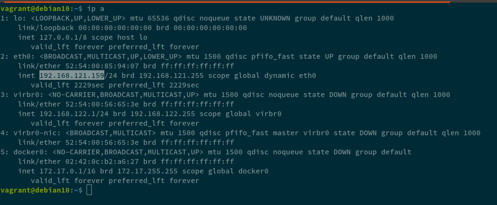open
virt-managerFile ➡️ Add a connection
[x] check Connect with SSH 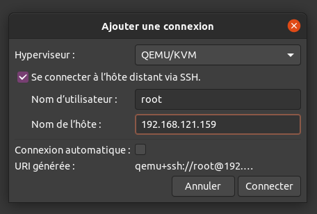
fill the hostname and click Connect
answer
yespassword is
vagrant
You can now manage your remote VMs from virt-manager
Windows - Manage your VMs
virsh will be your main management tool
vagrant ssh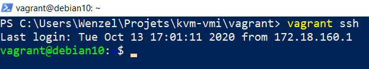sudo virshlist --allstart winxp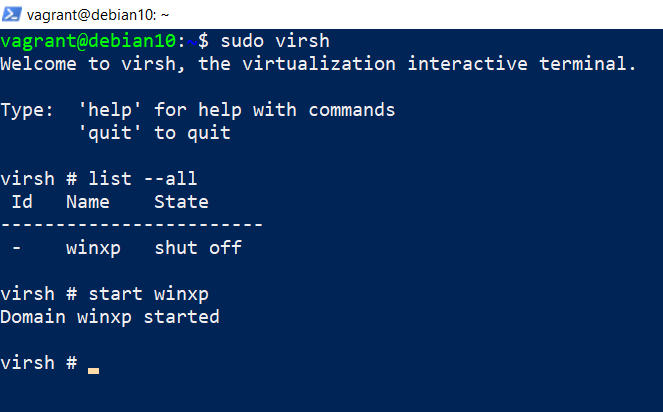ip ato get the guest’s IP address 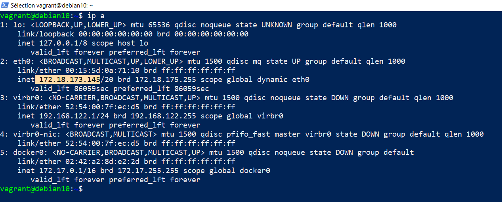netstat -ltp | grep qemuto get QEMU’s VNC portConnect with a VNC client to the remote VM !
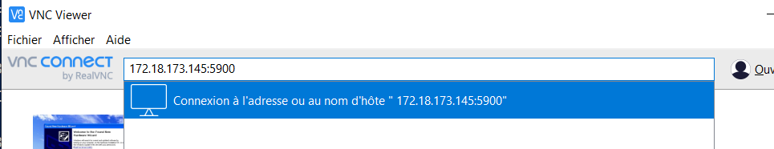 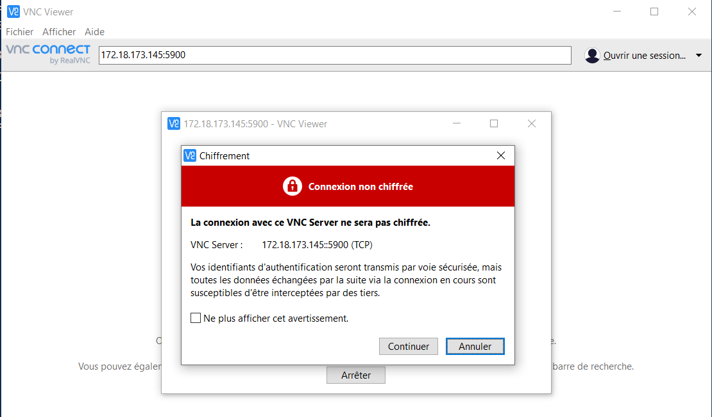 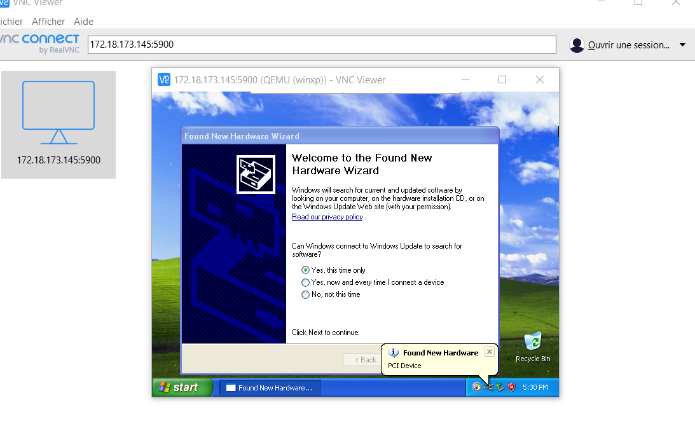
Running LibVMI tools
vagrant sshStart the VM
Some Libvmi example programs are installed system wide:
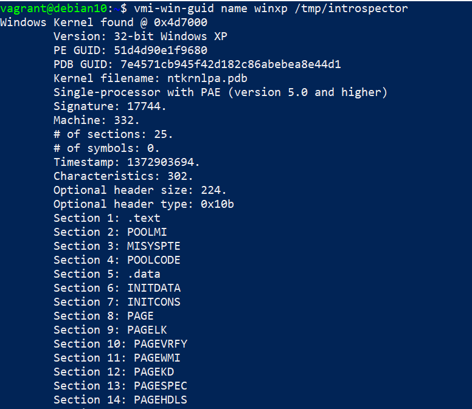
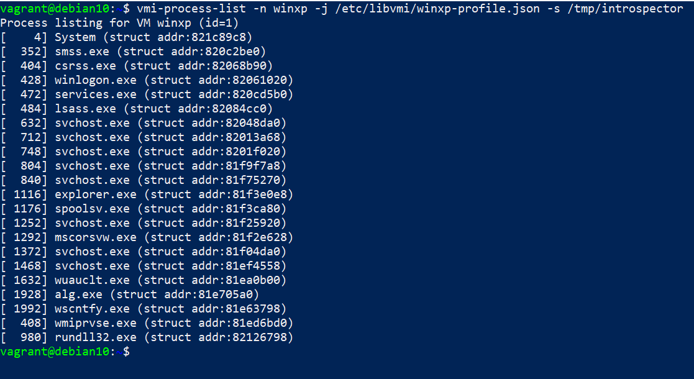
You can also run the examples from the build directory:
Go to
/vagrant/libvmi/build./examples/cr3-event-example winxp /tmp/introspector
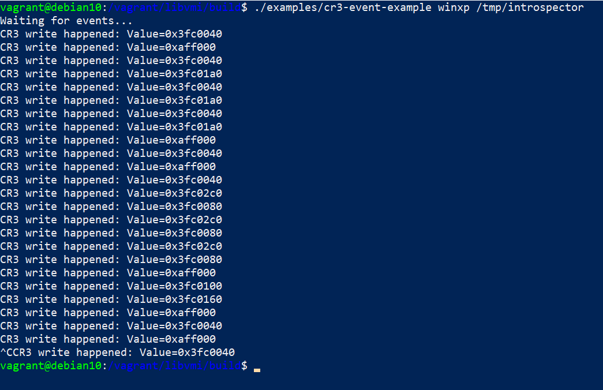 üéâ
Troubleshooting
Opening the firewall for NFS (Linux)
You need to open your firewall for NFS. The following commands should make it work for a Vagrant box
to access your host NFS server:
firewall-cmd --permanent --add-service=nfs
firewall-cmd --permanent --add-service=rpc-bind
firewall-cmd --permanent --add-service=mountd
firewall-cmd --reload
Option 2: Bare-metal setup
This guide will help you setup KVM-VMI directly on your system.

KVM
You will have to compile and install an entire kernel. It is not possible to compile the KVM modules using an “out-of-tree” build.
First we need to install the kernel build dependencies
$ sudo apt-get install bc fakeroot flex bison libelf-dev libssl-dev dwarves
Let’s configure the kernel
$ cd kvm-vmi/kvm
Use your current kernel config as a base config
$ cp /boot/config-$(uname -r) .config
Apply the following configuration:
# disable kernel modules signature
./scripts/config --disable SYSTEM_TRUSTED_KEYS
./scripts/config --disable SYSTEM_REVOCATION_KEYS
# enable KVM
./scripts/config --module KVM
./scripts/config --module KVM_INTEL
./scripts/config --module KVM_AMD
# enable intospection
./scripts/config --enable KVM_INTROSPECTION
# disable hugepage due to compilation issue
./scripts/config --disable TRANSPARENT_HUGEPAGE
# tweak localversion
./scripts/config --set-str CONFIG_LOCALVERSION -kvmi
# ubuntu 22.04 compatibility
./scripts/config --enable PREEMPT
./scripts/config --disable NET_VENDOR_NETRONOME
Configure the rest of the kernel options with default values
$ make olddefconfig
Generate a debian package
$ make -j$(nproc) bindeb-pkg
Install the Linux image
$ sudo dpkg -i ../linux-image-5.4.24-kvmi+_5.4.24*deb
Reboot.
Run uname -a
You should be on kernel 5.4.24+ (kvmi v7)
QEMU
Dependencies
$ sudo apt-get install libpixman-1-dev pkg-config zlib1g-dev libglib2.0-dev dh-autoreconf libspice-server-dev
Configure, build and install QEMU
$ cd kvm-vmi/qemu
$ ./configure --target-list=x86_64-softmmu --enable-spice --prefix=/usr/local
$ make -j4
$ sudo make install
Your modified QEMU has been installed at /usr/local/bin/qemu-system-x86_64
Note: You might need to modify your Apparmor configuration to allow its execution.
Preparing a domain
The Virtual Machine should be available in libvirt.
Modify the XML configuration as the following.
<domain type='kvm' xmlns:qemu='http://libvirt.org/schemas/domain/qemu/1.0'>
<qemu:commandline>
<qemu:arg value='-chardev'/>
<qemu:arg value='socket,path=/tmp/introspector,id=chardev0,reconnect=10'/>
<qemu:arg value='-object'/>
<qemu:arg value='introspection,id=kvmi,chardev=chardev0'/>
</qemu:commandline>
...
<devices>
<emulator>/usr/local/bin/qemu-system-x86_64</emulator>
Note that you need to add xmlns:qemu='http://libvirt.org/schemas/domain/qemu/1.0'.
Note: If you want to use the remote memory mapping feature (and setup a VM with the introspection tool) you’ll find detailed instructions here.
Validate the new configuration and start the domain.
libkvmi
libkvmi is a wrapper over the low-level KVMi API (ioctls)
You should use this library to build your applications.

$ cd kvm-vmi/libkvmi
$ ./bootstrap
$ ./configure
$ make
$ sudo make install
Libkvmi examples
Run the example provided by libkvmi: hookguest-libkvmi
$ cd libkvmi/examples
$ ./hookguest-libkvmi /tmp/introspector
Give it at least 10 seconds (waiting on QEMU to connect to the socket /tmp/introspector) and you should see some output ! :tada:
LibVMI
LibVMI is a VMI library providing a unified access on Xen and KVM, as well as a semantic layer.
Dependencies
$ sudo apt-get install build-essential gcc libtool cmake pkg-config check libglib2.0-dev libvirt-dev flex bison libjson-c-dev
Build and install
$ cd kvm-vmi/libvmi
$ mkdir build
$ cd build
$ cmake .. -DCMAKE_INSTALL_PREFIX=/usr/local -DENABLE_KVM=ON -DENABLE_XEN=OFF -DENABLE_BAREFLANK=OFF
$ make -j2
$ sudo make install
JSON profiles
TO use all the features of LibVMI, you need a Rekall/Volatility profile.
You can generate one like this:
Run
./examples/vmi-win-guidand note theKernel filenameandPDB GUIDfields.Use Volatility3 to extract the JSON profile
$ git clone https://github.com/volatilityfoundation/volatility3
$ cd volatility3
$ virtualenv -p python3 venv
$ source venv/bin/activate
(venv) $ pip install -e .
(venv) $ python volatility/framework/symbols/windows/pdbconv.py -o profile.json -p <Kernel filename> -g <PDB GUID>
Debug output
The debug output can be configured via CMake.
The constants should be used from libvmi/debug.h
cd build
cmake .. -DVMI_DEBUG='(VMI_DEBUG_KVM | VMI_DEBUG_DRIVER)'
make
sudo make install
Toggling the debug output is controlled by an environment variable: LIBVMI_DEBUG
$ LIBVMI_DEBUG=1 ./build/examples/vmi-process-list -n winxp -j /etc/libvmi/winxp-profile.json
Go to LibVMI for the rest of the documentation.